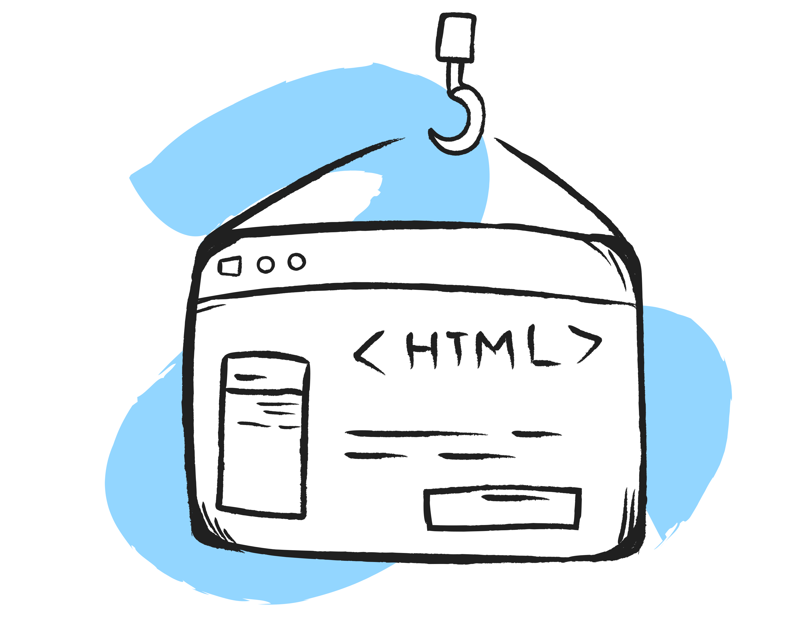

HTML: 웹의 언어, 그 시작을 돌아보다

1991년, 스위스 제네바의 유럽 입자 물리 연구소(CERN)에서 한 연구원이 조용히
새로운 기술을 세상에 공개했다. 바로 월드와이드웹(WWW) 프로젝트의
핵심이었던 **HTML(HyperText Markup Language)**이다. 그 주인공은 팀 버너스
리(Tim Berners-Lee). 그는 인터넷이라는 거대한 네트워크를 통해 정보를 쉽게
공유하고 연결할 수 있는 시스템을 구상했다. HTML은 그의 비전의 중심이었다.
단순한 텍스트 기반 언어로 시작한 HTML은 문서 간의 링크(하이퍼링크)를
가능하게 해, 전 세계 정보를 손끝으로 탐험할 수 있는 문을 열었다. 처음에는
단순히 제목, 본문, 링크 등을 표시할 수 있는 태그 몇 개로 구성된 소박한
언어였다. 하지만 시간이 지나면서 HTML은 이미지, 표, 양식, 동영상 등 다양한
요소를 지원하며 웹의 심장을 뛰게 만드는 핵심 기술로 자리 잡았다. 오늘날
우리가 누리는 디지털 세상은 팀 버너스 리의 작은 아이디어에서 시작됐다.
그의 HTML은 단순한 언어 그 이상이었다. 정보의 자유로운 흐름과 연결, 그리고
모두를 위한 웹이라는 철학의 구현이었다. HTML, 그 시작은 단순했지만, 그
영향력은 우리의 삶을 송두리째 바꿔 놓았다.